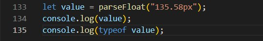
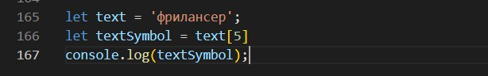

Завдання №1. Оператори JAVASCRIPT. "2"+2=22.
- Не вірно. Оператор додавання не змінює тип даних на number. В результаті ми отримаємо рядок 35 - 22.
- Вірно. Оператор множення змінює тип даних на number. В результаті ми отримаємо число 770.
- Не вірно. Інкремент можливо застосовувати лише до змінних. Такий вираз приведе до помилки.
- Не вірно. Результатом буде 0. В даному випадку використано суфіксну форму, в результаті, змінна newUsers отримає перше значення (0) змінної usersCounter ще до виконання операції.
- Не вірно. В першому виразі оператор !(НІ) переведе булеве значення false в true, а число 11 це також true. В другому виразі число 18 це true, а оператор !(НІ) переведе значення false пустого рядка в значення true. Після цього буде використано оператор ||(АБО), тому що приорітет оператора &&(ТА) вищий за приорітет оператора ||(АБО). Так як в першому виразі двоє операндів true, тому буде повернуто 11.
- Змінна name задана. Результатом буде значення 0, тому що оператор ?? поверне перший операнд змінної name, а саме 0, так як він не null і не undefined.
Завдання №2. IF ELSE в JAVASCRIPT. Умовний оператор "?".

- Брехня. При строгому рівнянні відбувається перевірка рівності без зміни типів в числа.
- Істина. Оператор рівності перетворює два операнда в число.
- Істина.
- Істина. Код виконується тільки якщо умова if повертає true. if(0) - це false, код не виконується. Якщо ж умова true (не пустий рядок це true) результатом буде Істина.
Завдання №3. Цикли FOR и WHILE в JavaScript. Директиви break і continue.
-
Вивести в консоль числа від 1 до 5
- Не вірно. Булеве значення числа 0 - false, тому останній результат буде 1.
-
Переписати на while
-
Припинити роботу цикла №1 коли size рівна 1
Завдання №4. Числа в JAVASCRIPT. Тип даних number. Робота з числами. Проблема неточних вирахувань.
-
Отримати правильне значення округлення
-
Отримати число 135.58 з рядка
 -
Побудувати правильну умову вітвлення
-
Знайти максимальне число з 10,58,39,-150,0
-
Округлити число 58.858 до числа 58
Завдання №5. Рядки в JAVASCRIPT. Тип даних string.
- Не вірно. Для подібного виразу потрібно використовувати зворотні лапки.
-
Отримати символ "н" рядка
 - Не вірно. Результатом буде рядок 123456. Оператор + не змінює тип даних.
-
Отримати рядок в верхньому регістрі.
- False. Тому що підрядок "лан" розпочинається з 3 комірки. Правильний запис: console.log(text.includes('лан',3));